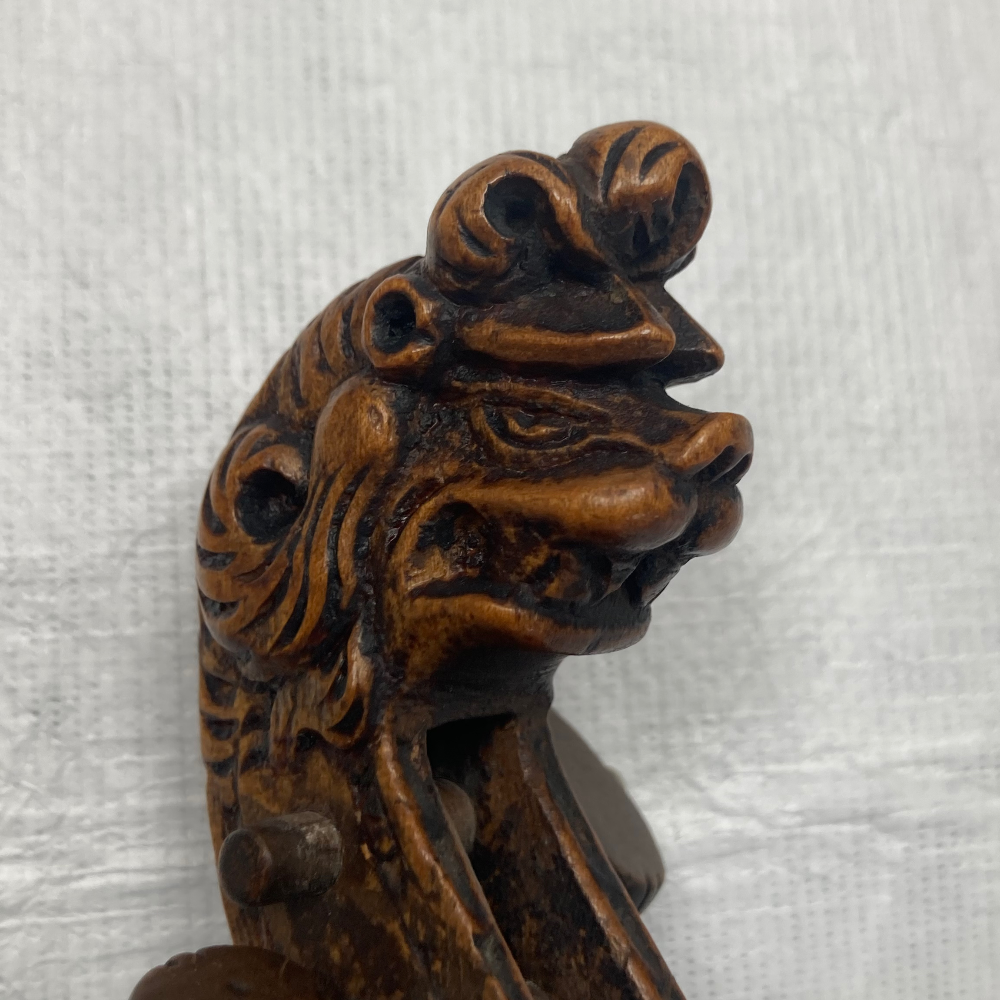

.jpeg)
Begleitend zum Bau von Instrumenten vertiefe ich mich auf theoretischer Ebene in angrenzende Themenfelder, um historische Fertigungsweisen, Stilistiken und Anforderungen besser zu verstehen. Meine Recherche stützt sich dabei auf den Austausch mit Kolleg*innen, Fachliteratur und die Arbeit an Originalinstrumenten zumeist in Museen.

In meiner Abschlussarbeit habe ich mich mit dem frühen Instrumentenbau rund um die Ostsee beschäftigt. Es entstand eine Skizze mit 211 Objekten und 134 Namen, die den Geigenbau vor 1760 in insbesondere den Orten Stockholm, Königsberg, Danzig, Lübeck, Hamburg, Kopenhagen und Ängelholm bezeugen. Zu Beginn der Arbeit vermutete ich stilistische Gemeinsamkeiten, die ich anhand der Merkmale Köpfe, Adern, Ränder, Material und der Wirbelkastenvorderseite versuchte zu belegen. Der europäische Geigenbau des 17. und 18. Jahrhunderts abseits des italienischen Geigenbaus weist ganz eigene Schönheit und Marken auf, wird bisher aber leider noch zu wenig wertgeschätzt, beachtet und erforscht.

Die moderne Halsmensur ist streng standartisiert. Das ist an historischen Instrumenten dagegen nicht sichtbar. Vielmehr werfen sich Fragen auf, welche Distanzen als Referenzen in der Herleitung der Halsmensur genutzt wurden und ob es instrumententypische und geographische Trends gab. In meiner Studienarbeit habe ich mich auf die Suche nach im Europa des siebzehnten Jahrhunderts gefertigten Instrumenten begeben, die noch ihre originale Halsmensur besitzen. Ich habe verschiedene Maße der Instrumente gesammelt und verglichen um autentischen historischen Halsmensuren näherzukommen.

1726 wurden von der Thomaskirche Leipzig Streichinstrumente aus der Werkstatt von Johann Christian Hoffmann gekauft. Die Instrumente werden bis heute in der Thomaskirche aufbewahrt, haben aber seither tiefgreifende Umbaumaßnahmen erfahren. In meiner Studienarbeit habe ich mich mit der Bratsche auseinandergesetzt und versucht, mögliche Originalzustände herzuleiten.